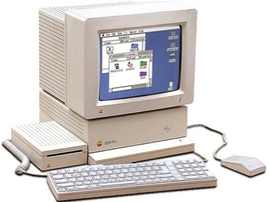

Apple IIGS

Apple IIGS arrived on 15th September 1986 and it is the final computer in Apple II series. It is a 16 bit computer and has both excellent graphics and music capability at that time.
You can now build up your own Apple IIGS using any Mac or PC. All you need is just the emulator, an Apple IIGS ROM image and a copy of System 6 operating system disk, and you will be ready. You can get a bootable disk here.
There are a few good Apple IIGS emulators:
-
•Mac OS X: Sweet16
-
•Mac OS 9: Bernie ][ The Rescue
-
•Windows/Linux: KEGS
-
•Web (Firefox or IE on PC): ActiveGS

Emulators
Resources
Winners do use Tools!
If you have seen an Apple IIGS in action, you might have seen FTA demo in action! As the emulated Apple IIGS is often much faster than the real thing (a new Mac running emulation can run as fast as 30 to 80MHz Apple IIGS speed), you can now do the same thing using simple toolbox calls.